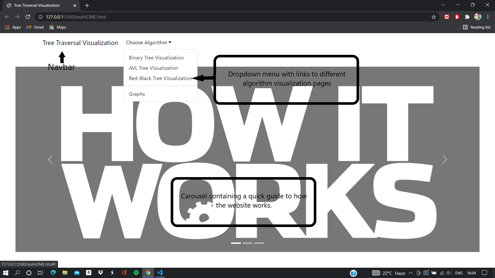
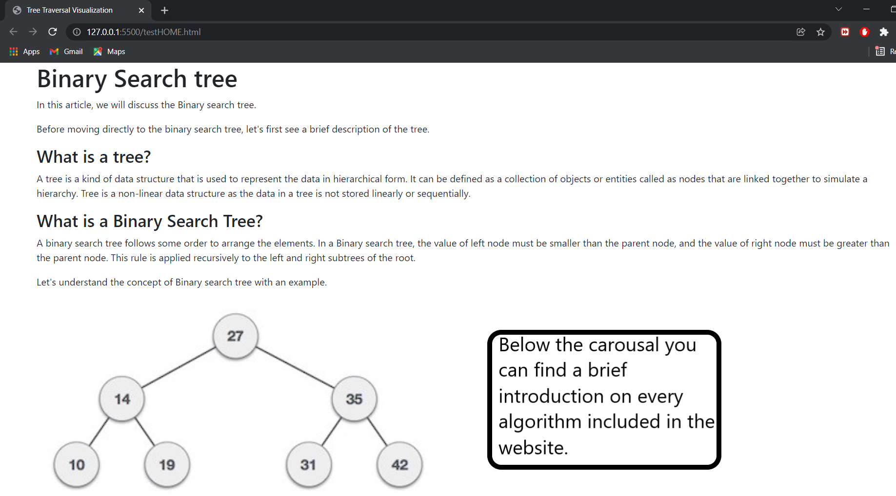
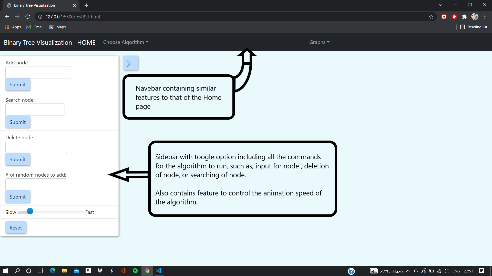
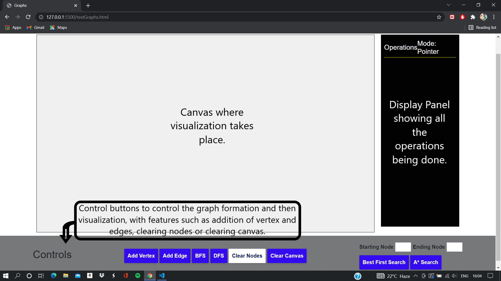
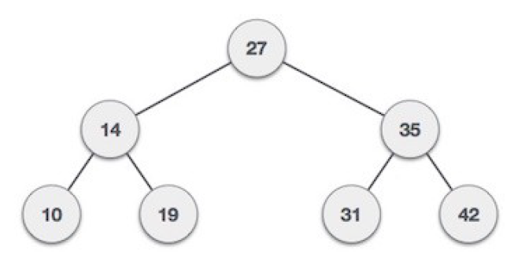
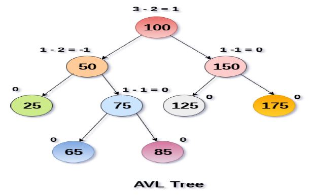
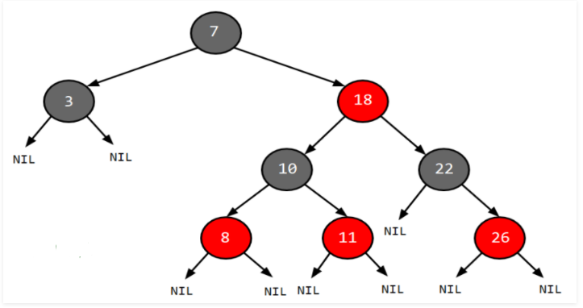
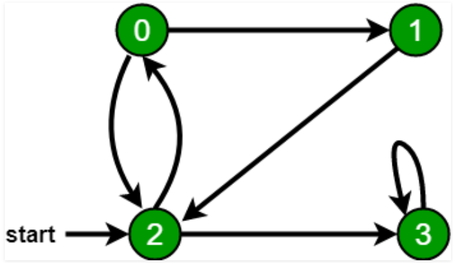

In this article, we will discuss the Binary search tree.
Before moving directly to the binary search tree, let's first see a brief description of the tree.
A tree is a kind of data structure that is used to represent the data in hierarchical form. It can be defined as a collection of objects or entities called as nodes that are linked together to simulate a hierarchy. Tree is a non-linear data structure as the data in a tree is not stored linearly or sequentially.
A binary search tree follows some order to arrange the elements. In a Binary search tree, the value of left node must be smaller than the parent node, and the value of right node must be greater than the parent node. This rule is applied recursively to the left and right subtrees of the root.
Let's understand the concept of Binary search tree with an example.
In the above figure, we can observe that the root node is 27, and all the nodes of the left subtree are smaller than the root node, and all the nodes of the right subtree are greater than the root node.
Similarly, we can see the left child of root node is greater than its left child and smaller than its right child. So, it also satisfies the property of binary search tree. Therefore, we can say that the tree in the above image is a binary search tree.
AVL Tree is invented by GM Adelson - Velsky and EM Landis in 1962. The tree is named AVL in honour of its inventors.
AVL Tree can be defined as height balanced binary search tree in which each node is associated with a balance factor which is calculated by subtracting the height of its right sub-tree from that of its left sub-tree.
Tree is said to be balanced if balance factor of each node is in between -1 to 1, otherwise, the tree will be unbalanced and need to be balanced.
If balance factor of any node is 1, it means that the left sub-tree is one level higher than the right sub-tree.
If balance factor of any node is 0, it means that the left sub-tree and right sub-tree contain equal height.
If balance factor of any node is -1, it means that the left sub-tree is one level lower than the right sub-tree.
An AVL tree is given in the following figure. We can see that, balance factor associated with each node is in between -1 and +1. therefore, it is an example of AVL tree.
We perform rotation in AVL tree only in case if Balance Factor is other than -1, 0, and 1. There are basically four types of rotations which are as follows:
1. L L rotation: Inserted node is in the left subtree of left subtree of A
2. R R rotation : Inserted node is in the right subtree of right subtree of A
3. L R rotation : Inserted node is in the right subtree of left subtree of A
4. R L rotation : Inserted node is in the left subtree of right subtree of A
Where node A is the node whose balance Factor is other than -1, 0, 1.
The first two rotations LL and RR are single rotations and the next two rotations LR and RL are double rotations. For a tree to be unbalanced, minimum height must be at least 2, Let us understand each rotation
Red black tree is a self-balancing binary tree where each node has an extra bit and that bit is often interpreted as color red or black. The colors ensure that the tree remains balanced during both deletions and insertions.
The average searching time of red-black tree is O(log n), where n is total number of elements in the tree.
• Every node has either red or black color.
• The root of the tree is always black.
• Newly inserted nodes are of red color.
• There are no two adjacent red nodes.
• Every path from node to its descendent NULL nodes has same number of black nodes.
• Null pointers are also considered black nodes.
• To balance an unbalanced red-black tree, we have to either re-color, use rotation or do both.
A red-black tree is preferred when the application requires frequent insertions and deletions, as it causes less rotations in insertion and deletion as compared to other trees.
A Graph is a non-linear data structure consisting of nodes and edges. The nodes are sometimes also referred to as vertices and the edges are lines or arcs that connect any two nodes in the graph. More formally a Graph can be defined as,
A Graph consists of a finite set of vertices(or nodes) and set of Edges which connect a pair of nodes.

In the above Graph, the set of vertices V = {0,1,2,3,4} and the set of edges E = {01, 12, 23, 34, 04, 14, 13}.
Graphs are used to solve many real-life problems. Graphs are used to represent networks. The networks may include paths in a city or telephone network or circuit network. Graphs are also used in social networks like linkedIn, Facebook. For example, in Facebook, each person is represented with a vertex(or node). Each node is a structure and contains information like person id, name, gender, locale etc.
Breadth-First Traversal (or Search) for a graph is similar to Breadth-First Traversal of a tree (See method 2 of this post). The only catch here is, unlike trees, graphs may contain cycles, so we may come to the same node again. To avoid processing a node more than once, we use a boolean visited array. For simplicity, it is assumed that all vertices are reachable from the starting vertex.
For example, in the following graph, we start traversal from vertex 2. When we come to vertex 0, we look for all adjacent vertices of it. 2 is also an adjacent vertex of 0. If we don’t mark visited vertices, then 2 will be processed again and it will become a non-terminating process. A Breadth-First Traversal of the following graph is 2, 0, 3, 1.
Depth First Traversal (or Search) for a graph is similar to Depth First Traversal of a tree. The only catch here is, unlike trees, graphs may contain cycles (a node may be visited twice). To avoid processing a node more than once, use a boolean visited array.
Depth-first search is an algorithm for traversing or searching tree or graph data structures. The algorithm starts at the root node (selecting some arbitrary node as the root node in the case of a graph) and explores as far as possible along each branch before backtracking. So the basic idea is to start from the root or any arbitrary node and mark the node and move to the adjacent unmarked node and continue this loop until there is no unmarked adjacent node. Then backtrack and check for other unmarked nodes and traverse them. Finally, print the nodes in the path.
Create a recursive function that takes the index of the node and a visited array.
1. Mark the current node as visited and print the node.
2. Traverse all the adjacent and unmarked nodes and call the recursive function with the index of the adjacent node.